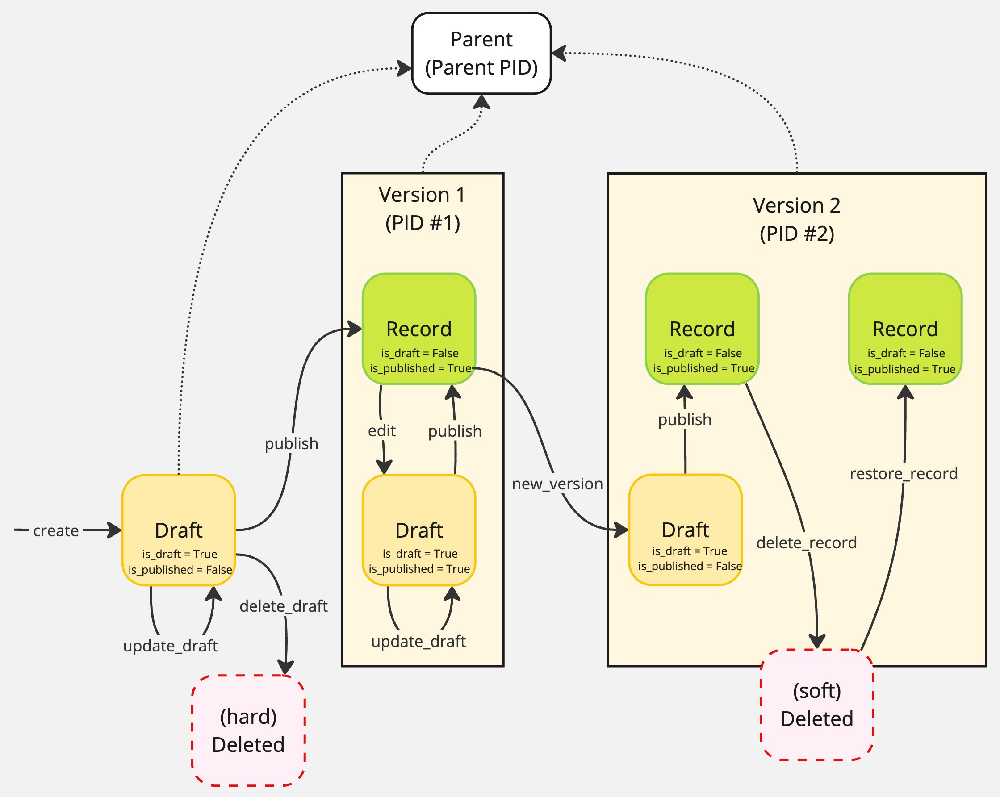

KCWorks Architecture¶
InvenioRDM’s Layered Architecture¶
InvenioRDM employs a layered architecture with:
Data layer
Low-level data storage and retrieval.
Primarily SQLAlchemy model classes.
High-level data API classes that provide a Pythonic interface to the data layer.
Validate data before storing it.
Service layer
Retrieves and modifies data from the data layer, either for a view or for another service.
Providing abstract CRUD methods for operating on the data layer’s API classes.
Providing abstracted “result items” and “result lists”
Enforces permission and access control policies.
View layer
Consists of
Flask views (registered as Blueprints)
rendering either
Jinja2 templates to produce HTML
JSON to produce API responses
in some cases, React components embedded in the Jinja2 templates
These are rendered on the client side
Data is passed from the Jinja2 templates to the React components via HTML data attributes
InvenioRDM Services¶
An InvenioRDM service is a class that provides methods for interacting with the data layer. The business logic of the service is usually delegated to one or more component classes, which are called during the service’s methods.
Service Classes¶
BaseService¶
The base Service class is defined in invenio_records_resources.services.base.Service. It defines methods for:
Getting the service ID
id(self): Return the id of the service from config.
Permissions checking
permission_policy(self, action_name, **kwargs): Factory for a permission policy instance.check_permission(self, identity, action_name, **kwargs): Check a permission against the identity.require_permission(self, identity, action_name, **kwargs): Require a specific permission from the permission policy.
Handling service components
components(self): Return initialized instances of the service’s component classes.run_components(self, action, *args, **kwargs): Run components for a given action.
Producing result items and lists
result_item(self, *args, **kwargs): Create a new instance of the resource unit, i.e. whatever the service provides.result_list(self, *args, **kwargs): Create a new list of resource units. In some cases this is a simple iterable of resource units, but in other cases it is a more complex object that includes additional data.
RecordService¶
Services dealing with InvenioRDM records of some kind (e.g. records, drafts, communities, etc.) inherit from the RecordService class defined in invenio_records_resources.services.records.service. This class adds:
properties and methods related to the service’s related data-layer API class
A
schemaproperty that returns aServiceSchemaWrapperinstance.A
record_clsproperty that returns the record class for the service.A
links_item_tplproperty that returns aLinksTemplateinstance for constructing links to a resource unit.An
expandable_fieldsproperty that returns a list of expandable fields for the service’s data-layer API class.
Methods for creating searches
create_search(self, identity, record_cls, search_opts, permission_action="read", preference=None, extra_filter=None, versioning=True): Instantiate a search class.search_records(self, identity, params, **kwargs): A low-level method to create an OpenSearch DSL instance for searching records.search(self, identity, params=None, search_preference=None, expand=False, **kwargs): A high-level method to search for records matching the querystring.scan(self, identity, params=None, search_preference=None, expand=False, **kwargs): A high-level method to perform a rolling “scroll” search for records matching the querystring. (This is used for searching through large numbers of records, since OpenSearch will not return more than 10,000 records at a time.)
Methods for indexing records
reindex(self, identity, params=None, search_preference=None, search_query=None, extra_filter=None, **kwargs): A high-level method to reindex records matching the query parameters.rebuild_index(self, identity, uow=None): A high-level method to reindex all records managed by this service.
CRUD methods
create(self, identity, data, uow=None, expand=False): Create a record.exists(self, identity, id_): Check if the record exists and user has permission. (Does not use the search index.)read(self, identity, id_, expand=False, action="read"): Retrieve a record. (Does not use the search index.)read_many(self, identity, ids, expand=False, action="read"): Retrieve multiple records using the search index.read_all(self, identity, params=None, search_preference=None, expand=False, **kwargs): Retrieve all records matching the query parameters using the search index.update(self, identity, id_, data, uow=None, expand=False): Update a record.delete(self, identity, id_, uow=None): Delete a record.
Helper methods for record management
check_revision_id(self, record, expected_revision_id): Validate the given revision_id with current record’s one.on_relation_update(self, identity, record_type, records_info, notif_time, limit=100): Handles the update of a related field record when the related field is updated.
Augmented RecordService¶
The invenio_drafts_resources package then overrides this with a RecordService class that adds (a) a distinction between published and draft records, (b) record versioning and a parent-child record relationship, and (c) file attachments to service records. This adds the following properties and methods to the RecordService class:
Properties and methods for draft records
draft_cls(self): Return the record class for the service.draft_files(self): Return the draft files service for the service.draft_indexer(self): A factory for creating an indexer instance.search_drafts(self, identity, params=None, search_preference=None, expand=False, extra_filter=None, **kwargs): Search for draft records matching the querystring.read_draft(self, identity, id_, expand=False): Retrieve a draft record.update_draft(self, identity, id_, data, revision_id=None, uow=None, expand=False): Replace a draft.edit(self, identity, id_, uow=None, expand=False): Creates a new revision of a draft or a draft for an existing published record.publish(self, identity, id_, uow=None, expand=False): Publishes a draft record.delete_draft(self, identity, id_, revision_id=None, uow=None): Deletes a draft record. (Defaults to a soft delete, so the record is not actually deleted from the database or search index until a later cleanup operation.)validate_draft(self, identity, id_, ignore_field_permissions=False): Validate a draft.cleanup_drafts(self, timedelta, uow=None, search_gc_deletes=60): Hard delete of soft deleted drafts.
Properties and methods for files
files(self): Return the files service for the service.import_files(self, identity, id_, uow=None): Import files from previous record version.
Properties and methods for versions and parent records
schema_parent(self): Return the parent schema for the service.search_versions(self, identity, id_, params=None, search_preference=None, expand=False, permission_action="read", **kwargs): Search for record’s versions.read_latest(self, identity, id_, expand=False): Retrieve the latest version of a record.new_version(self, identity, id_, uow=None, expand=False): Creates a new version of a record. This overriddenRecordServiceclass also modifies the CRUD methods to enforce a workflow in which records are only modified via their draft records. This involves overriding:
update(self, identity, id_, data, uow=None, expand=False): Now raises aNotImplementedErrorerror.create(self, identity, data, uow=None, expand=False): Now creates a draft record.rebuild_index(self, identity): Now reindexes all draft records (instances of draft API class) as well as all published records (instances of record API class) and skips soft-deleted records.
RDMRecordService¶
The invenio_rdm_records package provides an RDMRecordService class that inherits from the RecordService class and adds:
Additional properties for accessing subservices
access: Return the access service for the service.pids: Return the PIDs service for the service.review: Return the review service for the service.
Methods for embargo handling
lift_embargo(self, identity, _id, uow=None): Lifts an embargo from the record and draft (if exists).scan_expired_embargos(self, identity): Scan for records with an expired embargo.
Properties and methods for file quota handling
schema_quota: Return the schema for quota information.set_quota(self, identity, id_, data, files_attr="files", uow=None): Set the quota values for a record.set_user_quota(self, identity, id_, data, uow=None): Set the user files quota.
Properties and methods for deletion of published records
schema_tombstone: Return the schema for tombstone information.delete_record(self, identity, id_, data, expand=False, uow=None, revision_id=None): Re-introduces soft-deletion of published records (which were previously removed by theRecordServiceclass).update_tombstone(self, identity, id_, data, expand=False, uow=None): Update the tombstone information for the (soft) deleted record.cleanup_record(self, identity, id_, uow=None): Clean up a (soft) deleted record.restore_record(self, identity, id_, expand=False, uow=None): Restore a record that has been (soft) deleted.mark_record_for_purge(self, identity, id_, expand=False, uow=None): Mark a (soft) deleted record for purge.unmark_record_for_purge(self, identity, id_, expand=False, uow=None): Remove the mark for deletion from a record, returning it to deleted state.purge_record(self, identity, id_, uow=None): Purge a record that has been marked.
Overridden methods to add deletion-related functionality
read(self, identity, id_, expand=False, action="read", include_deleted=False): Adds aninclude_deletedargument to the read method, and a check for theread_deletedpermission if it is set toTrue.read_draft(self, identity, id_, expand=False): Prevents reading a draft if there is a published deleted record. (410 response.)search(self, identity, params=None, search_preference=None, expand=False, extra_filter=None, **kwargs): Adds a “read_deleted” permission action to the search method.search_drafts(self, identity, params=None, search_preference=None, expand=False, extra_filter=None, **kwargs): Adds a filter to exclude soft-deleted records from the search results.search_versions(self, identity, id_, params=None, search_preference=None, expand=False, permission_action="read", **kwargs): Adds a “read_deleted” permission action to the search method.
Additional overridden methods for other functionality
publish(self, identity, id_, uow=None, expand=False): Adds a check prior to the original publish method to allow enforcement of a config setting that requires a community to be present on a record before it can be published.update_draft(self, identity, id_, data, revision_id=None, uow=None, expand=False): Adds a check prior to the original update_draft method to allow enforcement of a config setting that prevents a record from being restricted after the grace period.
Additional new methods for other functionality
expandable_fields: Expands thecommunitiesfield to return community details.oai_result_item(self, identity, oai_record_source): Get a result item from a record source in the OAI server.scan_versions(self, identity, id_, params=None, search_preference=None, expand=False, permission_action="read_deleted", **kwargs): Search for record’s versions using a “scroll” search.
Service Configuration¶
A service configuration is an object that provides the service with its configuration. It is passed to the service’s constructor when it is instantiated during the Flask app initialization.
The service configuration is defined in the service’s config attribute.
All service configurations inherit from the ServiceConfig class, which is defined in invenio_records_resources.services.base.config. They include at least:
service_id: The ID of the service.permission_policy_cls: The permission policy class to use for the service.result_item_cls: The result item class to use for the service.result_list_cls: The result list class to use for the service.
This is expanded in a RecordServiceConfig class by the invenio_records_resources package to add:
record_cls: The record class to use for the service.indexer_cls: The indexer class to use for the service.indexer_queue_name: The name of the task queue to be used by the service’s indexer.index_dumper: The dumper to be used for serializing records to be indexed by OpenSearch.relations: The inverse relation mapping for the service, defining which fields relate to which record type.search: The search configuration for the service. (This is aSearchOptionsinstance.)schema: The schema to be used when validating the service’s records.links_item: The template for creating url links for the service’s result items.links_search: The template for creating url links for the service’s search endpoints.components: A list of components that will be used by the service.
It is further expanded in an overridden RecordServiceConfig class by the invenio_drafts_resources package to add:
draft_cls: The draft record class to use for the service.draft_indexer_cls: The indexer class to use for the service’s draft records.draft_indexer_queue_name: The name of the task queue to be used by the service’s draft records indexer.schema_parent: The schema used to valid parent records for the service.search_drafts: A search class for searching for draft records.search_versions: A search class for searching for record versions.default_files_enabled: Whether files are enabled by default for the service.default_media_files_enabled: Whether media files are enabled by default for the service.lock_edit_published_files: Whether to lock editing of published files for the service.links_search_drafts: The template for creating url links for the service’s search drafts endpoint.links_search_versions: The template for creating url links for the service’s search versions endpoint.
The RDMRecordServiceConfig class adds the following additional configuration attributes:
max_files_count: The maximum number of files that can be attached to a record.file_links_list: The list of file links for the service.schema_access_settings: The schema for access settings.schema_secret_link: The schema for secret links.schema_grant: The schema for grants.schema_grants: The schema for grants.schema_request_access: The schema for request access.schema_tombstone: The schema for tombstone.schema_quota: The schema for quota.
Additional common configration attributes are added by inheriting from additional mixin classes.
Attaching configuration to the service¶
The service config class can be passed to the service’s constructor when it is instantiated during the Flask app initialization (i.e., in the init_app() method of the extension):
service = MyService(config=MyServiceConfig)
Alternatively, if the service config class inherits from the ConfiguratorMixin class, the service and its config class can be initialized like this:
service = MyService(MyServiceConfig.build(app))
File service configuration¶
The FileConfigMixin class (defined in invenio_records_resources.services.records.components.files) adds config class attributes for: ????
_files_attr_key: The attribute key for the files field._files_data_key: The attribute key for the files data._files_bucket_attr_key: The attribute key for the files bucket._files_bucket_id_attr_key: The attribute key for the files bucket ID.
Search configuration¶
SearchOptionsMixin¶
This mixin class (defined in invenio_records_resources.services.base.config) adds config class attributes for:
facets: The search facet definitions for searches on the service’s resource.sort_options: The sort options for searches on the service’s resource.sort_default: The default sort option for searches on the service’s resource.sort_default_no_query: The default sort option for searches on the service’s resource when no query is present.available_sort_options: The available sort options for searches on the service’s resource.query_parser_cls: The query parser class to use in constructing searches on the service’s resource.
SearchConfig¶
The SearchConfig class (defined in invenio_records_resources.services.base.config) defines the search configuration that will be used to interface with OpenSearch.
FromConfigSearchOptions¶
The FromConfigSearchOptions class (defined in invenio_records_resources.services.base.config) is used to load search configuration from app config variables. In the service’s config class, it is used like this:
Loading configuration from app config variables¶
The FromConfig class (defined in invenio_records_resources.services.base.config) is used to load configuration from app config variables. In the service’s config class, it is used like this:
class MyServiceConfig(ServiceConfig):
foo = FromConfig("FOO", default=1)
In the app config, the config variable is defined like this:
FOO = 2
When the service is instantiated, the FromConfig class will load the config variable from the app config and assign it to the foo attribute.
Service Components¶
A service component is a class that provides methods that shadow the service’s methods. When a service method is called, it passes the call through each of the service’s components (using the Service.run_components() method), allowing each component to perform additional processing before the result is returned. If the service component includes a method with the same name as the service method that is being called, its matching method will be called. During this call, the component method is passed the service method’s arguments and keyword arguments, and the service method’s modified versions of these arguments are passed on to the next component. Once all the service’s components have been called, the result is returned to the service method, which returns the final result or performs the final action.
BaseServiceComponent¶
The BaseServiceComponent class (defined in invenio_records_resources.services.base.components) is the base class for all service components. It provides a uow property that returns the Unit of Work manager.
This class is overridden by the ServiceComponent class (defined in invenio_records_resources.services.base.components.base), which adds the following methods:
create(self, identity, **kwargs): Perform additional processing while creating an item of the service’s resource.read(self, identity, **kwargs): Perform additional processing while retrieving an item of the service’s resource.update(self, identity, **kwargs): Perform additional processing while updating an item of the service’s resource.delete(self, identity, **kwargs): Perform additional processing while deleting an item of the service’s resource.search(self, identity, search, params, **kwargs): Perform additional processing while searching for items of the service’s resource.
The invenio_drafts_resources package overrides the ServiceComponent class to add methods matching the overridden RecordService methods for draft records and versioning.
read_draft(self, identity, draft=None): Retrieve a draft record.update_draft(self, identity, data=None, record=None, errors=None): Update a draft record.delete_draft(self, identity, draft=None, record=None, force=False): Delete a draft record.edit(self, identity, draft=None, record=None): Edit a record.new_version(self, identity, draft=None, record=None): Create a new version of a record.publish(self, identity, draft=None, record=None): Publish a draft record.import_files(self, identity, draft=None, record=None): Import files from previous record version.post_publish(self, identity, record=None, is_published=False): Post publish handler.
RecordService Components¶
The invenio_records_resources package provides the following components for the RecordService class:
DataServiceComponent(create, update): Adds data to the record.BaseRecordFilesComponent(create, update):Handles enabling/disabling files for a record.
Handles setting the default preview file for a record.
MetadataComponent(create, update): Adds metadata to the new/updated record from the input data.RelationsComponent(read): Dereferences a record’s related fields in order to provide the data from the related records in a read result.ChangeNotificationsComponent(update): Emits a change notification for the updated record.
The invenio_drafts_resources package provides additional components for the RecordService class:
an overridden
BaseRecordFilesComponentclass that adds methods for ???DraftFilesComponent: Handles files for draft records.DraftMediaFilesComponent: Handles media files for draft records.DraftMetadataComponent: Handles metadata for draft records.PIDComponent(create, delete_draft): Handles registration of PIDs for draft records.an overridden
RelationsComponentclass that adds aread_draftsmethod
The invenio_rdm_records package provides additional components for the RDMRecordService class:
AccessComponent(create, update_draft, publish, edit, new_version): Handles access settings for records.an overridden
MetadataComponentclass (create, update_draft, publish, edit, new_version): Adds metadata to the new/updated record from the input data. (Removes theupdatemethod from the earlierMetadataComponentclass.)CustomFieldsComponent(create, update_draft, publish, edit, new_version): Adds custom fields to the metadata of a record.PIDsComponent(create, update_draft, delete_draft, publish, edit, new_version, delete_record, restore_record): Handles PIDs for records.ParentPIDsComponent(create, publish, delete_record, restore_record): Handles parent PIDs for records.RecordDeletionComponent(delete_record, update_tombstone, restore_record, mark_record, unmark_record, purge_record): Handles deletion of records.RecordFilesProcessorComponent(publish, lift_embargo): Handles file processing for records.ReviewComponent(create, delete_draft, publish): Handles reviews for records.SignalComponent(publish): Triggers signals on publish.ContentModerationComponent(publish): Creates a moderation request if the user is not verified.
RDMRecordService Components¶
The invenio_rdm_records package draws its list of components from the RDM_RECORDS_SERVICE_COMPONENTS config variable. The default list is defined in the DefaultRecordsComponents class (defined in invenio_rdm_records.services.config) and currently includes:.
[
MetadataComponent,
CustomFieldsComponent,
AccessComponent,
DraftFilesComponent,
DraftMediaFilesComponent,
RecordFilesProcessorComponent,
RecordDeletionComponent,
# for the internal `pid` field
PIDComponent,
# for the `pids` field (external PIDs)
PIDsComponent,
ParentPIDsComponent,
RelationsComponent,
ReviewComponent,
ContentModerationComponent,
]
Note that the order of the components in the list is important, since the components are called in the order they are listed and some components depend on the results of previous components.
InvenioRDM Record Objects¶
API-level Record Objects¶
RDMDraft (invenio_rdm_records.records.api.RDMDraft)¶
The RDMDraft object is a subclass of the Record object (defined in invenio_records.api.Record) and includes all of the submitted metadata values, along with the keys:
$schemaidcreatedupdatedrevision_idversion_idpid(as opposed topids, a separate field)media_files(if not present indata)custom_fields(if not present indata)
Its dict has the following shape (these values are available by key and also as dot properties):
{
'$schema': 'local://records/record-v6.0.0.json',
'pid': {
'pk': 88,
'pid_type': 'recid',
'status': 'N',
'obj_type': 'rec'
},
'id': '9f06s-7d583',
'files': {
'enabled': True
},
'media_files': {
'enabled': True
},
'metadata': {
'resource_type': {'id': 'image-photograph'},
'creators': [
{'person_or_org': {
'type': 'personal',
'given_name': 'Troy',
'family_name': 'Brown',
'name': 'Brown, Troy'}
},
{'person_or_org': {
'type': 'organizational',
'name': 'Troy Inc.'}
}
],
'title': 'A Romans story',
'publisher': 'Acme Inc',
'publication_date': '2020-06-01'
},
'custom_fields': {},
'access': {
'record': 'public',
'files': 'public'
},
'pids': {}
}
The RDMDraft also has the following properties:
‘bucket’,
‘bucket_id’,
‘created’,
‘dumper’,
‘expires_at’,
‘fork_version_id’,
‘format_checker’,
‘has_draft’,
‘index’,
‘is_deleted’,
‘is_draft’,
‘is_published’,
‘media_bucket’,
‘media_bucket_id’,
‘model’,
‘model_cls’,
‘parent’,
‘parent_record_cls’,
‘revision_id’,
‘revisions’,
‘schema’,
‘status’,
‘updated’,
‘validator’,
‘versions’,
‘versions_model_cls’
And the following methods (among others, including standard dict methods)
‘cleanup_drafts’,
‘clear’,
‘clear_none’,
‘commit’,
‘copy’,
‘dumps’,
‘get_latest_by_parent’,
‘get_record’,
‘get_records’,
‘get_records_by_parent’,
‘items’,
‘keys’,
‘loads’,
‘new_version’,
‘register’,
‘relations’,
‘revert’,
‘send_signals’,
‘undelete’,
‘validate’,
Service-level Response Objects¶
How Tos: Creating and Modifying Records¶
Creating and Modifying Records in General¶
All InvenioRDM record services inherit the same core methods from the RecordService class. In the examples below, the service variable represents an instance of a record service. The identity variable represents an identity object.
Update a record¶
Note that this will not work for deposit records, since they are not directly editable. The RDMRecordService update method will raise a NotImplementedError error. Those records must be updated via a draft. Other record services, though, allow direct updates.
record = service.read(id_=pid, identity=identity)._record
record.update(metadata)
# the refresh is required because the access system field takes precedence
# over the record's data in 'record.commit()'
record.access.refresh_from_dict(record["access"])
record.commit()
db.session.commit()
service.indexer.index(record)
Delete a record¶
Note that this will not work for deposit records, since they are not directly deletable. The RDMRecordService delete method will raise a NotImplementedError error. Those records must be deleted via a draft. Other record services, though, allow direct deletions.
deleted_record = service.delete(id_=pid, identity=identity)
Reading Deposit Records (RDMRecordService)¶
Note that, unlike most record service retrieval methods, the read method does not use the search index. It retrieves the record from the database directly with a SQLAlchemy query. This means, though, that it will not always include the latest data from the search index, and that updated information present in a read result may not yet be present in the search index.
from invenio_rdm_records.proxies import current_rdm_records_service
one_record = current_rdm_records_service.read(identity, id)
all_records = current_rdm_records_service.read_all()
multiple_records = current_rdm_records_service.read_many(identity, ids)
Creating and Modifying a Deposit Record (RDMRecordService)¶
The InvenioRDM Record Life Cycle¶
InvenioRDM uses a “draft-first” approach to record creation and modification. Records are created as drafts and the published in a separate step. Published records cannot be modified directly. Instead, a new draft must be created, updated with new metadata, and then published again.
No revision history is kept for drafts or for edits to published records. Only a record’s latest draft is kept, and only its latest published state is preserved. In order to preserve a history of changes, you must create new record versions. When a new version is created, the previous version’s published state is preserved. A new draft is created that can be published without affecting the previous version. This new version can, in turn, be edited and re-published any number of times without any preserved history. When desired, a new permanently preserved state for the record can by frozen by creating yet another new version.
While a record is in draft state, it can be hard deleted with no preserved record. Once a draft has been published, it can generally only be soft deleted. The record is no longer available or discoverable via the search index, but a tombstone placeholder is preserved. This provides a record that can be presented if, for example, someone tries to access a deleted record’s DOI link.
The life cycle of records for a single work can be represented in a diagram like this:
The solid arrows represent methods of the RDMRecordService class. The beige rectangles represent preserved versions of the record, recoverable record states in its revision history.
Gotchas with the RDMRecordService¶
Note that InvenioRDM only ever allows one draft to be associated with a record. There is no editing history for drafts. So draft updates are “destructive” in the sense that the previous state of the draft is lost. If you need to keep a history of changes, you must create published versions of the record.
Create a draft of a new record¶
from invenio_rdm_records.proxies import current_rdm_records_service
draft = current_rdm_records_service.create(identity=identity, data=data)
Hard delete a draft¶
from invenio_rdm_records.proxies import current_rdm_records_service
current_rdm_records_service.delete_draft(id_=pid, identity=identity)
No tombstone is created for a hard deleted draft. It cannot be recovered once deleted.
Update an unpublished draft¶
from invenio_rdm_records.proxies import current_rdm_records_service
draft_data = current_rdm_records_service.read_draft(id_=pid, identity=identity).data.copy()
# update the metadata...
edited_draft = current_rdm_records_service.update_draft(id_=pid, identity=identity, data=metadata)
Update a published record via a new draft¶
from invenio_rdm_records.proxies import current_rdm_records_service
# create a draft of the published record
draft_of_published = current_rdm_records_service.edit(id_=pid, identity=identity)
# update the draft
updated_draft = current_rdm_records_service.update_draft(id_=pid, identity=identity, data=metadata)
# publish the draft
published_record = current_rdm_records_service.publish(id_=pid, identity=identity)
Create a new version of a published record¶
from invenio_rdm_records.proxies import current_rdm_records_service
new_version_draft = current_rdm_records_service.new_version(id_=pid, identity=identity)
The new version draft is a new draft of the published record. It includes the previous version’s published state, which can be edited and published again.
Note that the new version draft is not automatically published. You must publish it separately. Its internal InvenioRDM record id (id) is the same as the previous version’s id. But the new version, once published, will be assigned a new DOI.
Soft-delete a published record¶
from invenio_rdm_records.proxies import current_rdm_records_service
tombstone_info = {"note": "no specific reason, tbh"}
deleted_record = current_rdm_records_service.delete_record(identity, record.id,
tombstone_info)
Restore a soft-deleted record¶
from invenio_rdm_records.proxies import current_rdm_records_service
restored_record = current_rdm_records_service.restore_record(identity, record.id)
How Tos: Custom Record Service Components¶
Component Methods¶
The following documents the arguments and data available to the various service component methods for the RDMRecordService.
create()¶
The create method of a service component is called before the completion of the RecordService.create method. It receives the following arguments:
data: dict
record:
invenio_rdm_records.records.api.RDMDrafterrors: list
uow:
invenio_records_resources.services.uow.UnitOfWork
data¶
The data value is a simple dict holding the submitted data to be used to create the record. It has the general shape of the InvenioRDM record schema, although it lacks several of the top-level keys that are present in a record object:
{
'access': {
'files': 'public',
'record': 'public'
},
'custom_fields': {},
'files': {'enabled': False},
'metadata': {
'creators': [
{'person_or_org': {
'family_name': 'Brown',
'given_name': 'Troy',
'name': 'Brown, Troy',
'type': 'personal'
}
},
{'person_or_org': {
'name': 'Troy Inc.',
'type': 'organizational'
}
}
],
'publication_date': '2020-06-01',
'publisher': 'Acme Inc',
'resource_type': {'id': 'image-photograph'},
'title': 'A Romans story'
},
'pids': {}
}
In particular, the data value lacks the following keys:
idcreatedupdatedrevision_idversion_id
If the record has not yet been published (or a DOI reserved), the ‘pids’ key will be empty.
record¶
The record value is a invenio_rdm_records.records.api.RDMDraft object that includes all of the data values, along with the keys:
$schema
pid (as opposed to pids, a separate field)
media_files (if not present in
data)custom_fields (if not present in
data)
For more information on the RDMDraft object, see the InvenioRDM Record Objects section.